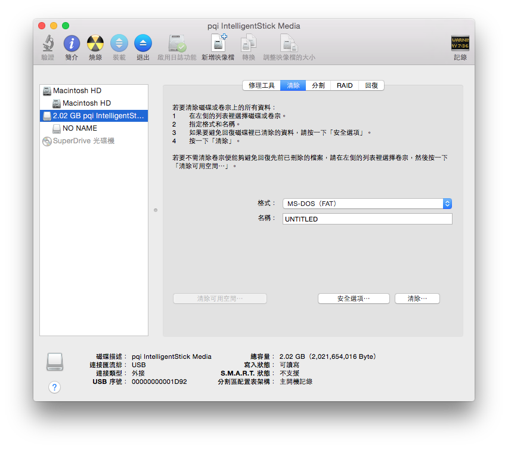
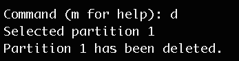
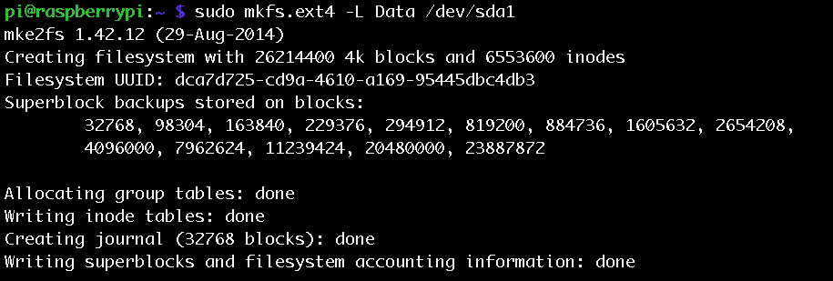

lsblk，查看現在已掛載的儲存裝置，可以看到儲存裝置的容量，以及作為掛載點（MOUNTPOINT）的資料夾。
sudo fdisk -l，也可以看到儲存裝置的資訊，還可以看出每個儲存裝置的檔案系統格式。
sudo umount /media/pi/RASPDB/ #當初掛載點是/media/pi/RASPDB/
fdisk來完成了，首先執行sudo fdisk /dev/sda，sda是掛載的第一個磁碟的名稱，所以第二個會叫sdb，以此類推。Changes will remain in memory only, until you decide to write them.
Be careful before using the write command.
Command (m for help):
m，就會看到各種指令的用法：
q就會離開，n則是進行下一步。然後，接下來可以指定磁區的類型，通常會是primary，所以選擇p。接著是錯誤示範：因為一開始硬碟在Mac時，全部的空間都已經劃分成一個磁區了，所以所以選擇磁區編號就會有問題，1號已經有人用了，且沒有空間給2號了。
d。
n-->p-->輸入磁區編號-->選擇磁區初始位置-->選擇磁區大小。如果一開始沒有把整個硬碟都劃分成同一分割區，可以再進行下一個分割區的設定，設定完再輸入w，就完成磁區分割了。
sda1與sda2，分別對他們做格式化(ext4)：sudo mkfs.ext4 -L Data /dev/sda1
sudo mkfs.ext4 -L Data /dev/sda2

/media/pi/Data、/media/pi/Data1......，以此類推。另一種方式就是自己手動掛載：sudo mkdir /media/pi/Data
sudo chown pi:pi /media/pi/Data
sudo mount -t vfat -o uid=pi,gid=pi /dev/sda1 /media/pi/Data